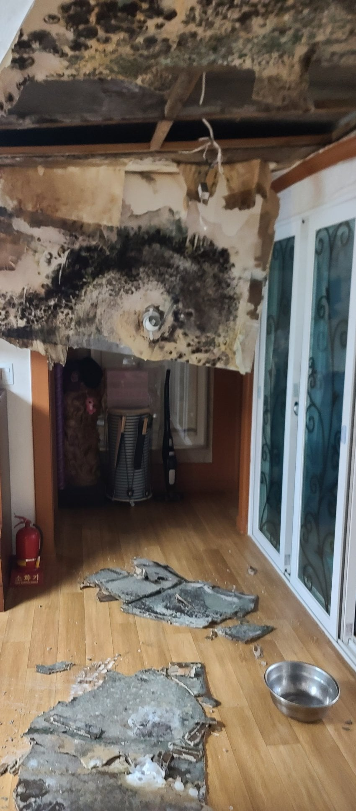
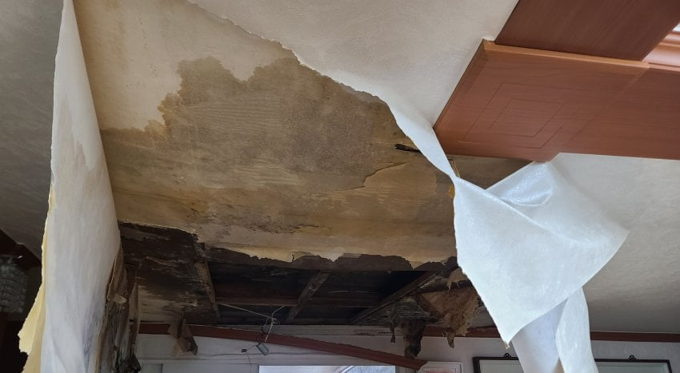
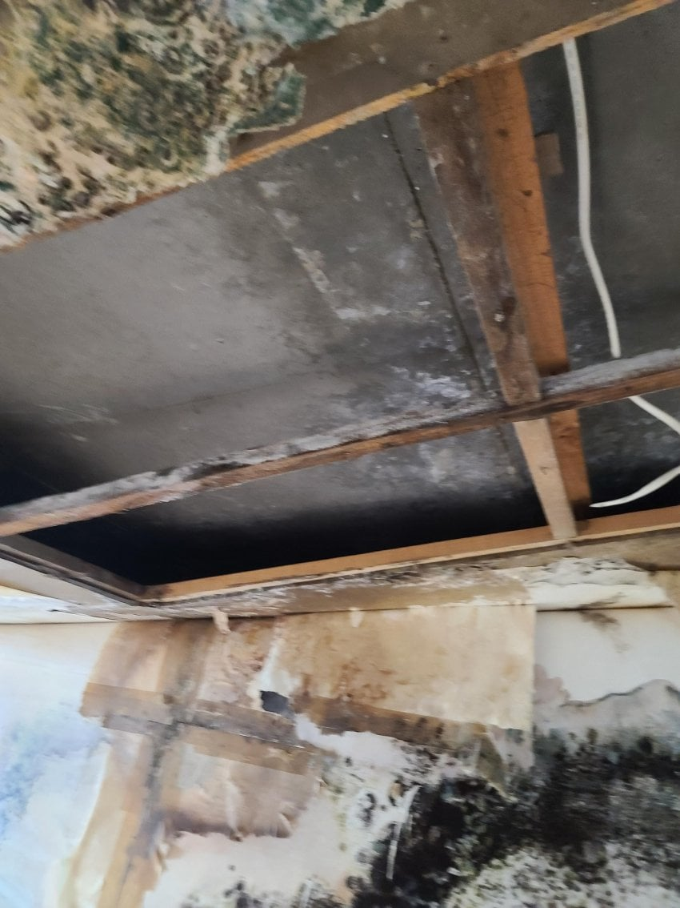
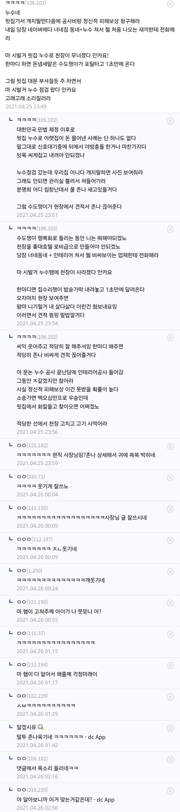

나 지금 누수로 2달째 고생중임. 물 조금 떨어져서 연락했는데, 다행히(?) 윗집이 얌전히 받아들임. 근데 기사분이 일을 못하는 건지 누수를 못 잡아서 지금 윗집 세면대 아래, 세면대, 이젠 욕조도 뜯어낼 거 같음.. 나는 머리 위에 물 맞아서 ㅈ같고 그 집(세입자)은 안방 화장실 못써서 작은 화장실에서 부부가 해결한다고 함...
누수 잡는것도 순서가 있다더라... 원래 확인 철저하게 해야하는데 잘 모른다 싶으면 한번에 다 안보고 계속 조금씩 조금씩 하면서 수리비 뻥튀기 한다고. 작업자 잘만나야한다고..
https://www.youtube.com/watch?v=U3SGbSvNWYw
어쨌든 내가 내는 거 아니니까 난 좀 불편하고 마는데, 일단 우리 아랫집 누수 생기면 여기에 맡기지 않을 듯...
누수나면 진짜 개고생인듯
이게 벌써 5년전 일이네 ㅋㅋㅋ
왐마 존나게 니기럴거다아아아앗!!!!